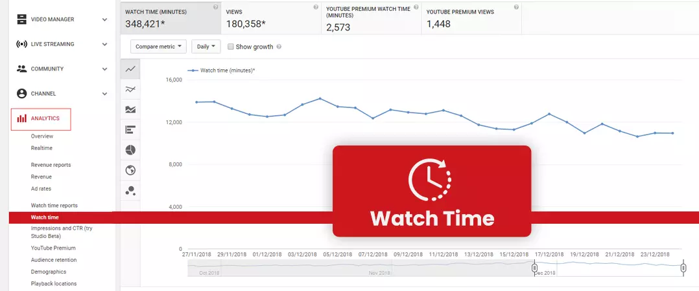

YouTube is an excellent source of traffic for your blog or website, way of making money, etc. On YT, millions of videos are seen every day, and the number of $100,000-earning channels grows by 40% every year (You can buy YouTube subscribers if you find yourself lost in this neck to neck competition). Smart YT marketing may help you achieve your outreach goals, whether you want to communicate a brand narrative, generate traffic to your eCommerce site, illustrate a procedure, or display a recipe, etc.
Likes and views are two of the most important indicators to consider when evaluating the performance of your video on the channel. Here's a simple guide to help you decide which of the two is more important:
Likes To Views Ratio YouTube

To address the issue of whether to aim for likes or views, the simple answer is that you should aim for both. Likes and views are crucial engagement indicators that indicate how well your YT video is performing.
The ratio of likes to views is a clear indicator of your YouTube marketing performance. A like-to-view ratio of 3.75 to 4% is recommended by experts in marketing. This translates to four likes every hundred views or forty likes per thousand views.
The percentage reveals the direction in which your YouTube marketing is heading. If the percentages match, your post is performing well; if you don't observe these averages, your YT marketing approach may be failing.
Content that is both amusing and educational is extremely popular with viewers. If your YT likes are low, it's time to switch things up.
How To Get More Likes and Views on YouTube

YouTube's algorithms, like Google's for search engine results, are designed to offer consumers the most relevant and helpful videos.
With over 2 billion monthly active users (https://www.YouTube.com/intl/en-GB/howYouTubeworks/ nofollow) on YT, getting people to watch and enjoy your video might be difficult. You may use the following techniques to boost your YouTube likes and views:
- A Captivating Title -Your video's title should pique people's interest and make them want to watch it. Make sure the title contains the core keyword and correctly reflects the content. Shorter names with less than 30 characters are preferred by YT marketing gurus, who also include a lot of ‘how to' in the title to increase interaction.
- Create a bespoke thumbnail rather than relying on the auto-generated frame from your YT video to function.
- Description - Assure your video's description has a compelling start that includes your goal keywords. In the middle section, provide more explanation, and at the conclusion, provide CTAs (calls to action) and links for your visitors to learn more or visit your website/blog.
- Hashtags and Tags - Using hashtags to broaden your video's reach and adding relevant tags to help your video rank higher are two more YT marketing methods you may employ to create more YT likes.
- Don't Forget to Put Your Newest Video on the Front Page of Your Channel: Add a video to your YT page when you've finished editing it. Your channel will appear more current and relevant as a result of this. It's helpful to show that you're engaged and on top of things to get more YouTube Video likes.
- Upload Transcription for Your Video in English and Spanish: You'd be amazed how many people speak Spanish throughout the world. Uploading transcriptions of your video in both English and Spanish will help it appear in search engines in both languages. This should be done if you want to expand your reach.
- Determine What Your Target Audience Desire: You want to make sure that any sort of content you create is in line with what your audience wants. Start by getting to know your audience and what kind of material they want to see from you. Take a look at your rivals or other video makers in your sector if you're just starting to advertise your YT channel. Examine which of their videos receives the most attention and participation. This can give you an idea of what topics and video styles your audience is interested in learning about.
- Post on a Schedule: By releasing videos on a regular basis, your fans will know when to anticipate them. Viewers will be more inclined to stay up with your content if you do this. You may also alter the headlines and graphics on a regular basis to keep things interesting.
- Use your social media sites on other platforms, such as Instagram, Twitter, or Facebook, to cross-promote your video. Viewers will be more interested in clicking through if you share your video on other pages. If you have a website, don't forget to link to it to gain more YouTube views.
The number of people who watch YT videos is an important factor in determining the effectiveness of YT marketing. Interesting thumbnails, a snappy tagline, descriptive keywords, and well-researched and interesting material are all effective techniques for boosting YT views.
If your ratio is less than 4%, you should concentrate on altering your YT marketing strategy. A large amount of YT views indicates that the material is entertaining and engaging. Higher views encourage others to watch the video, resulting in the video becoming viral.
Also read: How to Build a Loyal Audience for YouTube Channel in 2021
Views and likes are both good indicators of how popular your video is. However, there are a few additional things to keep an eye out for:
Comments
Another metric for gauging popularity is the comment to view ratio. The ratio of comments to views should be 0.05 percent. That implies that for every 1000 views, you get 5 comments. You can buy YouTube comments as well if this is an area you are facing difficulty in.
Subscribers
The number of people who have subscribed to your channel might indicate how popular it is. However, you should pay attention to the ratio of YouTube views to subscribers. Make certain that your followers are watching your videos. The average view-to-subscriber ratio is about 14%. If you have 1,000 subscribers, you may expect about 140 views for each video.
Watch Time

Your viewers must be watching, and they should be watching for a long time. If they don't remain with you, you'll need to consider what you can do to make your films more interesting.
Also read: YouTube analytics: How to track the right metrics
Final Thoughts
Consider all these metrics to achieve success on the platform. However, if you lack a good amount of audience even after consistent efforts and are wondering How to see likes on YouTube, to buy YouTube likes is the best decision. When you work with a reputable YT marketing business, buying YT likes is a tried and true approach. Purchasing likes does not violate YouTube's terms of service and has no impact on your channel's visibility. Increasing the number of YT likes and in turn, views will dramatically enhance the like-to-view ratio, resulting in a higher marketing ROI (return on investment).
Do try it out and share your experience!